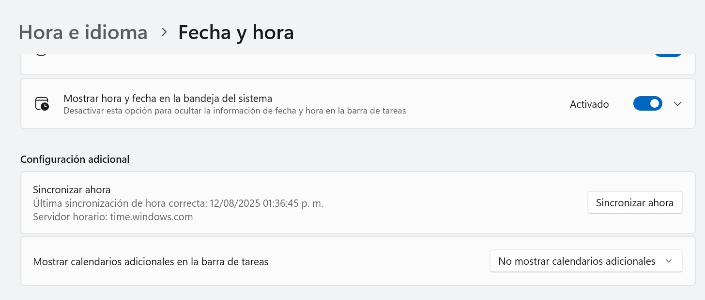
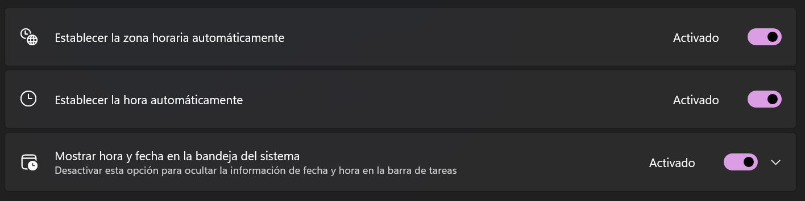
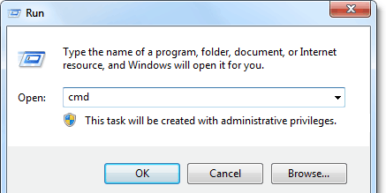

La sincronización de la hora no es una opción, es un control de seguridad.
de los equipos en un entorno seguro deben tener la hora controlada y bloqueada por políticas de dominio para garantizar la integridad de los registros.
Paso 1: Verificación visual de la política (GUI)
Este protocolo permite una rápida validación visual para determinar si la política de bloqueo de fecha y hora está aplicada correctamente en un equipo con Windows.
- Acceder al menú de **Inicio** y seleccionar **Configuración** (ícono de engrane ⚙️).
- En la ventana de Configuración, seleccionar la opción **Hora e idioma**.
- En el menú lateral, verificar la sección **Fecha y hora**. Los controles en esta pantalla indicarán el estado de la política. 

Paso 2: Interpretación de resultados de la auditoría
El estado de los controles define si el equipo cumple con la política de seguridad.
✅ Estado correcto (bloqueado)
Los interruptores están en gris y no se pueden manipular. Esto confirma que la hora es gestionada centralmente por el servidor de la organización. El equipo cumple con la política.
❌ Anomalía detectada (desbloqueado)
Los interruptores están activos y pueden ser manipulados por el usuario. Esto representa una desviación de la política de hardening y debe ser documentado y reportado de inmediato.
Verificación por línea de comandos (método definitivo)
Este método confirma de manera concluyente la fuente de sincronización horaria del equipo. Es el procedimiento recomendado para un reporte de auditoría detallado.
Opción 1: Símbolo del sistema (CMD)
- Presionar **Windows + R**, escribir
cmdy presionar Enter.

- En la terminal, ejecutar el comando:
w32tm /query /status. - **Analizar el resultado:** Verificar el campo "Source" (Fuente). Debe apuntar a un servidor de dominio de la empresa (ej: `dc01.empresa.local`). Si apunta a `Local CMOS Clock`, la política no está siendo aplicada.
Opción 2: PowerShell
- Presionar **Windows + R**, escribir
powershelly presionar Enter. - En la terminal, ejecutar el mismo comando:
w32tm /query /status. - **Analizar el resultado:** La interpretación es idéntica a la de CMD. El objetivo es confirmar que la fuente de sincronización sea un controlador de dominio autorizado.

Fundamento de la política de bloqueo
La sincronización horaria centralizada es un control crítico para la ciberseguridad y la integridad operativa.